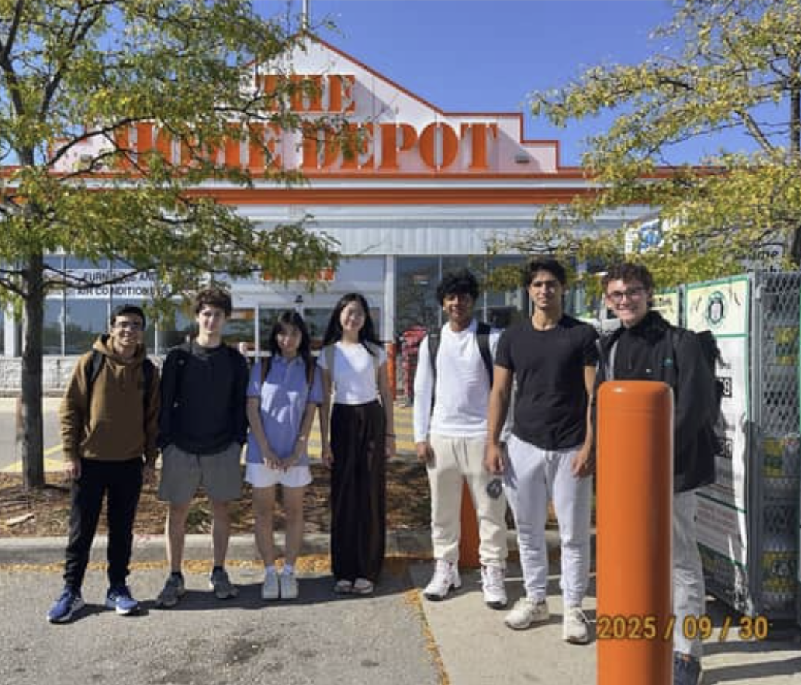
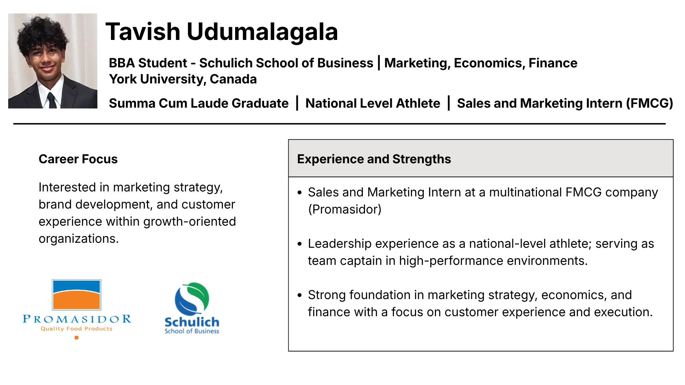

|
Tavish Udumalagala
I am Tavish Udumalagala and I am a Freshman at the Schulich School of Business, York University. Currently enrolled in ITEC 1010 to develop my knowledge in Information and Organizations, and the digital world in general.
First year BBA Student at York University, Canada. Looking forward to Major in Economics and Minor in Finance. Graduated High School with Summa Cum Laude Honors. National Level Swimmer, specialized in Breast Stroke, Free Style and Back Stroke. College and Competitive Level Basketball Player. I have been enjoying my hobbies, sports, learning and using time to develop my skills in Entrepreneurship.
Email /
LinkedIn
|
|
Projects
Here are some of the projects I have worked on related to business and technology.
|
|

|
Home Depot Management Retail Presentation
2025
Conducted an in-depth analysis of Home Depot’s retail operations through field observation and team-based research. Developed a comprehensive understanding of retail management by evaluating store layout, customer experience, product placement, and operational strategy, identifying key factors that contribute to efficiency and overall business performance.
|
|

|
Tavish Udumalagala's Elevator Pitch
2026
Developed and delivered a professional elevator pitch as part of a marketing course, effectively communicating personal value, skills, and career goals. The project focused on persuasive communication, personal branding, and structuring a concise, impactful narrative tailored to potential employers.
|
|
{kind=link}